xhci driver implementation
Table of Contents
1. about hardware
1.1. the terms in xhci
Device Slot
the term Device Slot is used as a generic reference to a set of xHCI data structures associated with an individual USB device. Each device is represented by an entry in the Device Context Base Address Array, a register in the Doorbell Array register, and a device's Device Context.
Slot ID
The term Slot ID refers to the index used to identify a specific Device Slot. For example the value of Slot ID will be used as an index to identify a specific entry in the Device Context Base Address Array.
Command Ring
The Command Ring is used by software to pass device and host related commands to the xHC.
Event Ring
The Event Ring is used by the xHC to pass command completion and asynchronous events to software.
Transfer Ring
The Transfer Ring is used by software to schedule work items for a single USB Endpoint. A Transfer Ring is organized as a circular queue of Transfer Descriptor(TD) data structures, where each Transfer Descriptor defines one or more Data Buffers that will be moved to or from the USB
1.2. Interface Architecture
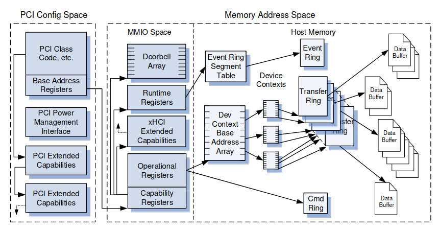
1.2.1. Host Configuration Space
Every xHC implementation shall include a means of identifying and enumerating the host controller by system software.
1.2.2. MMIO Space
The Register Space represents the hardware registers presented by the xHC to system software that reside in the Memory Address Space.
- Capability Registers
- Extended Capability Registers
- Operational Registers and Runtime Registers
Doorbell Registers
The Doorbell Array is an array of up to 256 Doorbell Registers, which supports up to 255 USB devicers or hubs. Each Doorbell Register provides system software with a mechanism for notifying the xHC if it has Slot or Endpoint related work to perform.
Doorbell register 0 is allocated to the Host Controller for Command Ring management.
1.2.3. Host memory
This space is defined by the control data structures and data buffers that are allocated and managed by the xHC Driver to enable the endpoint traffic of individual devices.
1.2.4. Transfer Types
The xHCI provides support for two categories of USB transfer types:
- asynchronous
- Control
- Bulk
- periodic
- Isochronous transfer
- Interrupt transfer
the xHCI provides a homogeneous mechanism (Transfer Rings) for each category of transfer type.
1.3. Command Interface
1.4. Device Context Base Address Array
The Device Context Base Address Array(DCBAA) provides the xHC with a Slot ID based lookup table for accessubf the Device Context data structure associated with each slot.
When a device attach is detected: system software initializes a Device Context data structure, requests a Slot ID from the xHC, and inserts a pointer to the newly created Device Context into the DCBAA at the location indicated by the Slot ID.
The first entry (Slot ID = '0') in the Device Context Base Address Array is utilized by the xHCI Scratchpad mechanism.
1.4.1. Scratchpad Buffers
The Scratchpad Allocation mechanism of the xHCI allows the xHC to request one or more PAGESIZE buffers of system memory for storing internal state.
The location of the Scratchpad Buffer Array is defined by entry 0 of the Device Context Base Address Array
The size of the Scratchpad Buffer Array is defined by the Max Scratchpad Buffers field in the HCSPARAMS2 Register
the description of the element in the scratchpad buffer

Features of xHC Scratchpad Allocation:
- The xHC may request multiple Scratchpad Buffers
- When accessing a Scratchpad Buffer the xHC shall not access system memory addresses outside of the PAGESIZE memory block allocated by system software.
- System software shall not read or write a Scratchpad buffer. System software writes to the Scratchpad buffer memory may result in undefined xHC operation.
- The content of the Scratchpad Buffers shall remain intact across system power events including D3.cold if SPR = ‘1’.
The following operations take place to allocate Scratchpad Buffers to the xHC:
- Software examines the Max Scratchpad Buffers Hi and Lo fields in the HCSPARAMS2 register
- Software allocates a Scratchpad Buffer Array with Max Scratchpad Buffers entries.
- Software writes the base address of the Scratchpad Buffer Array to the DCBAA (Slot 0) entry.
- For each entry in the Scratchpad Buffer Array:
- Software allocates a PAGESIZE Scratchpad Buffer.
- Software clears the Scratchpad Buffer to ‘0’.
- Software writes the base address of the allocated Scratchpad Buffer to associated entry in the Scratchpad Buffer Array.
1.5. Contexts
1.5.1. Device Context
The Device Context data structure is managed by the xHC and used to report device configuration and state information to system software.
The Device Context data structure consists of up to 32 entries. The first entry (entry0) is the Slot Context data structure and the remaining entries are Endpoint Context data structures.
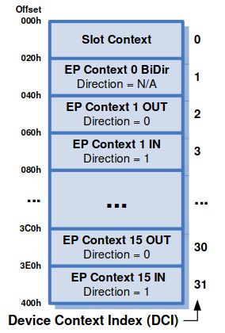
Device Context Index
For Isoch, Interrupt, or Bulk type endpoints the DCI is calculated from the Endpoint Number and Direction with the following formula
DCI = (Endpoint Number * 2) + Direction
For Control type endpoints:
DCI = (Endpoint Number * 2) + 1
1.5.2. Slot Context
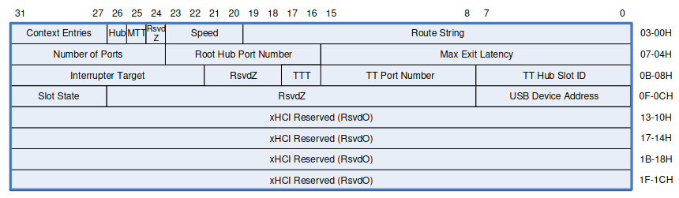
1.5.3. Endpoint Context
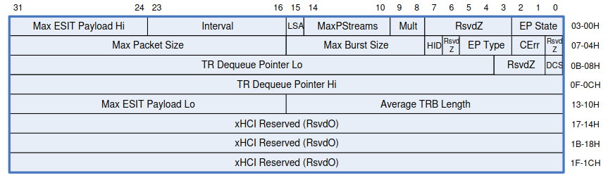
Most of the fields of the Endpoint Context contain endpoint related type, control, state, and bandwidth information, that correspond to the information in the associated endpoint related descriptors reported by the device.
An Endpoint Context also defines a TR Dequeue Pointer field, which norm ally provides a pointer to the Transfer Ring associated with the pipe.
There is a special case for USB3 Bulk endpoints where Streams may be associated with an endpoint.
1.6. Rings
Three types of Rings are used by the xHc to communicate and execute USB operations:
1.6.1. Command Ring
One for the xHC.
The Command Ring is used by system software to issue commands to the xHC.
1.6.2. Event Ring
One for each Interrupter.
The Event Ring is used by the xHC to return status and results of commands and transfers to system software.
1.6.3. Transfer Ring
One for each Endpoint or Stream.
Transfer Rings are used to move data between system memory buffers and device endpoints
for example:
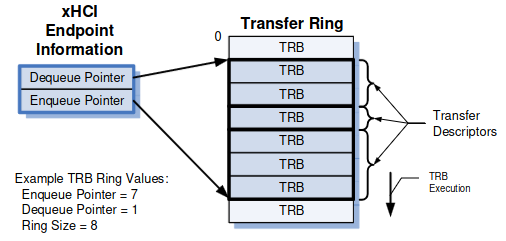
Transfers to and from the Endpoint of a USB device are defined using a Transfer Descriptor (TD), which consists of one or more Transfer Request Blocks.
steps:
- software defines a Transfer Ring by allocating and initializing a memory buffer for it.
- then setting the Enqueue and Dequeue Pointers to the address of this memory buffer and writing it into the TR Dequeue Pointer field of the associated Endpoint or Stream Context.
Each memory buffer that comprises a Transfer Ring is called a Segment. Multiple Segments may be linked together to form large rings, and Segments may be added or removed from a ring during runtime.
Transfer Ring management
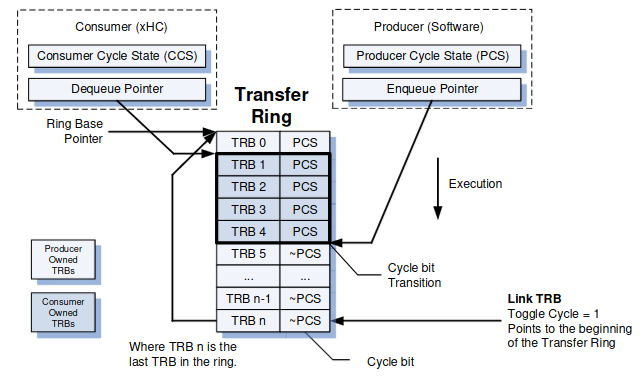
1.7. Transfer Request Block
1.7.1. TRB Template
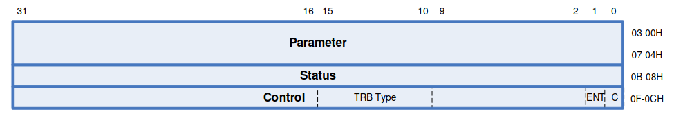
1.7.2. Transfer TRBs
- normal TRB
A Normal TRB is used in several ways:
- exclusively on Bulk and Interrupt Transfer Rings for normal and Scatter/Gather operations.
- to define additional data buffers for Fine and Coarse Grain Scatter/Gather operations on Isoch Transfer Rings.
- to define the Data stage information for Control Transfer Rings.
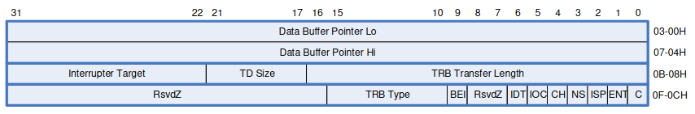
- Control TRB
Control transfers require two or three TDs to define them:
- Setup stage TD
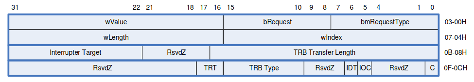
- [optional] Data stage TD
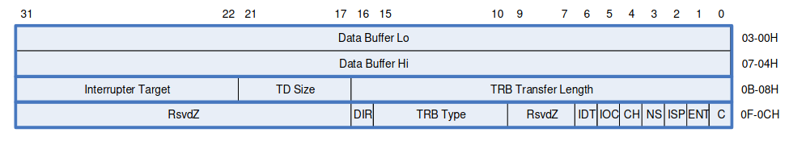
- Status stage TD
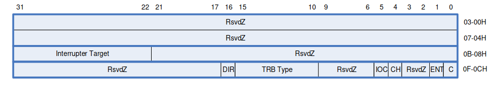
- Isoch TRB
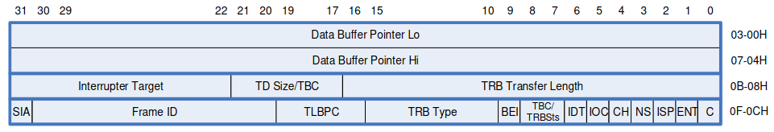
- No op TRB
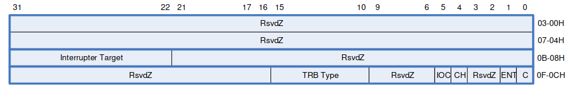
1.8. Event Ring Segment Table
2. about software
2.1. USB controller initialization
2.2. USB device authorization
the authorized_default behaviour is authorized for all devices except wireless.
2.3. related about DMA
As following code shows, usb hcd driver will create 4 dma pools, whose size are 32, 128, 512, 2048 respectively.
static size_t pool_max[HCD_BUFFER_POOLS] = {
32, 128, 512, 2048,
};
2.4. the structure of xhci_hc_driver
2.4.1. flags
The default value is HCD_MEMORY | HCD_DMA | HCD_USB3 | HCD_SHARED | HCD_BH
2.5. register a usb hcd into system
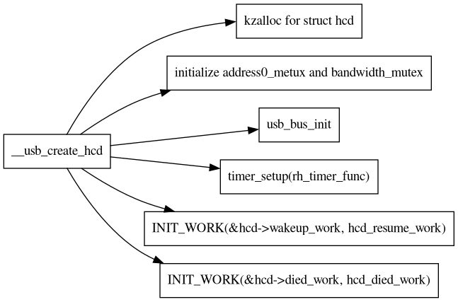
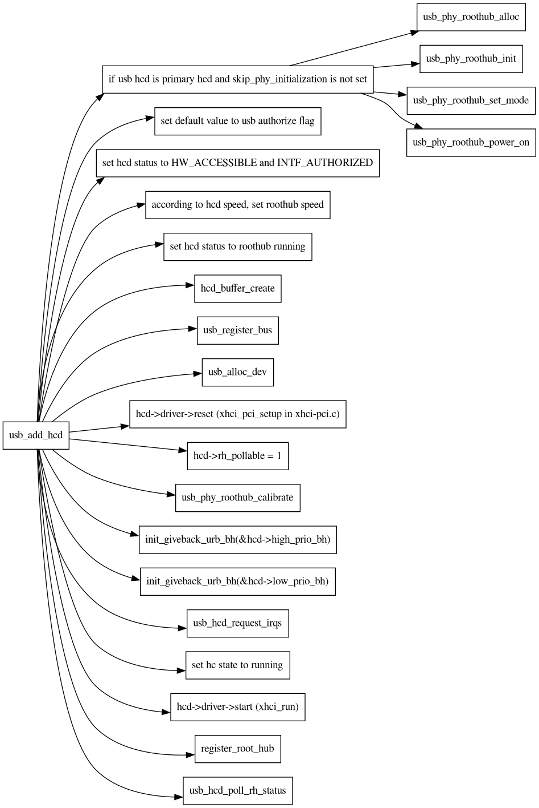
2.5.1. the general interfaces of xhci driver
reset:
a host controller driver maybe implement its own reset function. such as
xhci_pci_setupin xhci-pci driver andxhci_plat_setupin xhci-plat driver. the reset interface performs two processes in general:- initializing quirk of
struct usb_hcd *hcd. calling
xhci_gen_setup.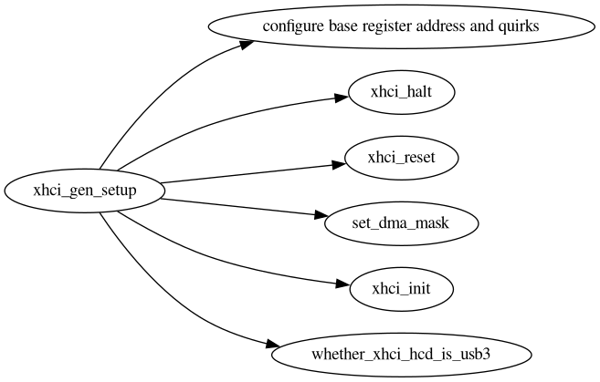
- initializing quirk of